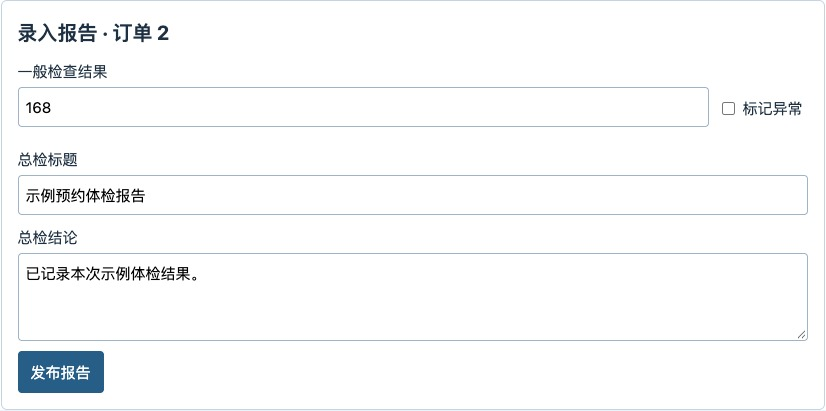

网页演示 · 虚构记录
体检预约演示
静态演示使用虚构记录。操作只影响当前页面，刷新后重置。
我的预约
查看订单，可取消待检预约，或进入医生端示例。
医生端 · 静态模拟
选择待检订单并保存预设的虚构结果。原项目后端实现了订单查询与报告录入接口。
报告中心
已完成的示例报告可查看总检结论和检查明细。
团队项目 · 前端制作、素材查找、内容整合
暑期实训 · 优秀项目
团队系统涵盖注册登录、医院与套餐选择、号源预约、订单管理、医生端预约查询与报告发布，以及用户端报告查询。
网页演示 · 虚构记录
静态演示使用虚构记录。操作只影响当前页面，刷新后重置。
查看订单，可取消待检预约，或进入医生端示例。
选择待检订单并保存预设的虚构结果。原项目后端实现了订单查询与报告录入接口。
已完成的示例报告可查看总检结论和检查明细。
实训报告记载的个人分工为前端制作、素材查找、内容整合。后端、数据库与医生端业务作为团队成果展示。
| 模块 | 原工程实现 |
|---|---|
| 用户端 | 注册登录、个人中心、医院和套餐浏览、预约日期、确认、预约记录与报告。 |
| 预约服务 | Spring Boot 控制器衔接日历、医院、套餐和订单服务。日历查询配置号源、已预约数量与可约余量。 |
| 医生与报告服务 | 后端提供订单查询、检查项目和明细录入、总检结果保存。用户端按订单 ID 读取报告。 |
| 数据层 | 通过 JPA 仓储访问 MySQL。订单关联用户、医院、套餐与预约日期，报告记录通过订单 ID 关联。 |
本地版沿用原用户端和后端，参照实训报告与团队接口补建医生工作台。医生可按体检人、套餐、日期和报告状态筛选，录入结果并查阅归档报告。两端均使用虚构记录。

